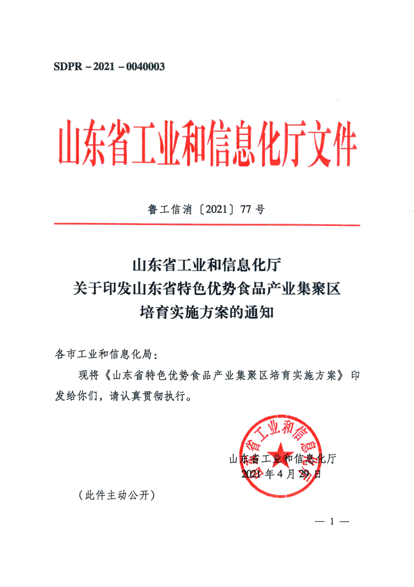

请打开整个 `explain/` 目录下的 `index.html`，不要只拷走这一个文件
document-failure-synth 在做什么
从已有中文 fillin 树合成左栏中文、右栏英文的双栏文档，产出与真实标注目录同构的五件套：origin / prelabel / label / multi-page-final / images_path。
用途：给下游 Trainer 提供双栏双语失效样本。本仓止于标注产物，不再生成 train.jsonl。
本页只看一份样例：源 doc_21f4dc879ffd（policy_document）→ synth_001，seed 52。
输入

源文件拷贝自 data/source/task_001_002_raw/images_path/raw-page-1.png
origin.json
fillin 节点摘录
- 源树共 8 页；配置 max_source_pages: 4，只用页 0–3。
- 任何非空 link_to 的 case 直接拒绝。
- image / chart / seal / table 要从源页图按 bbox 裁切；缺页图会在这一步失败。
处理过程
加载素材
读 fillin 树和 origin，展平成块。图、章、印、表按 bbox 从源页图裁成小图，供后面 HTML 引用。
本步输入：上面三个节点。
本步输出：SourceBlock 列表。
src/synth/material.py · load_material
tree = load_fillin_tree(case_dir)
_assert_no_link_to(tree)
origin = json.loads((case_dir / ORIGIN_FILENAME).read_text(encoding="utf-8"))
blocks: list[SourceBlock] = []
for raw in iter_source_blocks(tree):
page = int(raw["page"])
if page >= cfg.max_source_pages:
continue
image_path = _crop_image_block(...) if raw["category"] in IMAGE_CATEGORIES else None
blocks.append(SourceBlock(id=raw["id"], page=page, category=raw["category"], text=raw["text"], image_path=image_path))下一块把这些块变成带标记的 HTML。
拼源 HTML
还不管双栏。每个块打上 data-node-id / data-category / data-lang="zh"，方便后面校对：一个都没丢。
本步输入：块列表。本步输出：只有中文的 HTML。
src/synth/html_builder.py · build_source_html
if block.page != current_page:
parts.append(f'<section class="src-page" data-src-page="{current_page}">')
attrs = (
f'data-node-id="{html.escape(block.id, quote=True)}" '
f'data-category="{html.escape(block.category, quote=True)}" '
f'data-lang="zh"'
)
if block.image_path:
parts.append(f'<img class="block" {attrs} src="{src}" alt="" />')
else:
parts.append(f'<div class="block" {attrs}>{html.escape(block.text)}</div>')然后才轮到模型：只插英文，不排版。
LLM 插英文
这是整条链路里唯一的模型调用。每个源页 section 单独翻译。中文节点不许改；应译类后面插一个相同 data-node-id 的英文兄弟。图章表格页眉页脚不译。
本步输入：步骤 2 的中文 HTML。本步输出落盘为 rewritten.html。印章没有 en。
src/synth/rewrite.py · rewrite_html
HARD RULES:
1. Keep every original element with data-node-id exactly as-is. Never drop, rename, or change any attribute (including src, class).
2. Original Chinese blocks have data-lang="zh". Do not modify their text content.
3. For EACH block with data-lang="zh" AND data-category in {translate_categories} (text blocks only, NOT img):
insert immediately AFTER it one English translation element with the SAME data-node-id.
4. Do NOT add English blocks for image/chart/seal/table/header/footer blocks or any img element.几何交给浏览器脚本，不交给模型。
分页截图
Playwright 打开 HTML，注入 paginate.js：左栏中文、右栏英文。同一 data-node-id 的 zh/en 必须同页；任一栏放不下就整对翻页。截图像素空间就是后面的 bbox。
本步输入：成对 HTML。样例目录没有合成 PNG，用示意图代替。
栏宽 (1000 − 2×40 − 24) / 2 = 448 · column_gap=24
src/synth/paginate.js · paginateDocument（由 render.render_pages 注入）
const zhNeedsPage = Boolean(pair.zh) && !fits(leftY, zhH) && leftY > margin;
const enNeedsPage = Boolean(pair.en) && !fits(rightY, enH) && rightY > margin;
if (zhNeedsPage || enNeedsPage) newPage();排完必须过校验，不过就整份丢掉。
校验
中文必须还是源树（id / 顺序 / 类别 / 原文）；该译的恰好一个英文；同 id 的 zh/en 同页且 x 不重叠。不过就整份丢掉重试。
本步输入：源树 + PlacedBlock。本份统计：少 1 个 en 是因为印章不译。
src/synth/validate.py · validate_doc
if _is_translatable(zh.category, cfg):
if len(en_list) == 0:
errors.append(f"missing en block: {node_id}")
elif len(en_list) > 1:
errors.append(f"duplicate en block: {node_id}")
elif en_list:
errors.append(f"unexpected en block for non-translatable: {node_id}")
if en.page != zh.page:
errors.append(
f"zh/en page split for {zh.node_id}: zh={zh.page} en={en.page}"
)通过后按阅读序重编号，写成下游认得的树。
写标注
按阅读序重编号：页内先左栏中文，再右栏英文。双语树节点 member=[中文新id, 英文新id]，text 全空。然后对截图跑 PaddleOCR 得到 prelabel（探测器，不与 GT 对齐）。
本步输入：PlacedBlock。源文号 p0-b3 在合成树里拆成左右两个新 id。
| 源 id | 角色 | 新 id | bbox x |
|---|
src/synth/gt_builder.py · _assign_ids
for page in sorted(by_page):
ordered: list[PlacedBlock] = []
for lang in ("zh", "en"):
ordered.extend(sorted(by_page[page][lang], key=_sort_key))
for index, block in enumerate(ordered, start=1):
block.__dict__["new_id"] = f"p{page}-b{index}"
mapped[(block.node_id, block.lang)] = block输出 · 五件套
origin.json
合成文档身份。真实跑通后 images_path 指向本份 images_path/。
label.json
页内块框（无字）。
multi-page-final.json
双语树。文号节点 member 原文在前、译文在后，text 留空。
prelabel.json
OCR 预标注（有字），与 GT 框不必对齐。
images_path/
截图像素空间。真实跑通后为 raw-page-N.png（N 从 1），bbox 与图同一坐标系。本讲解页用步骤 4 示意图代替。